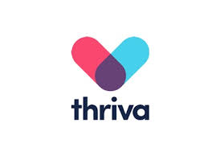
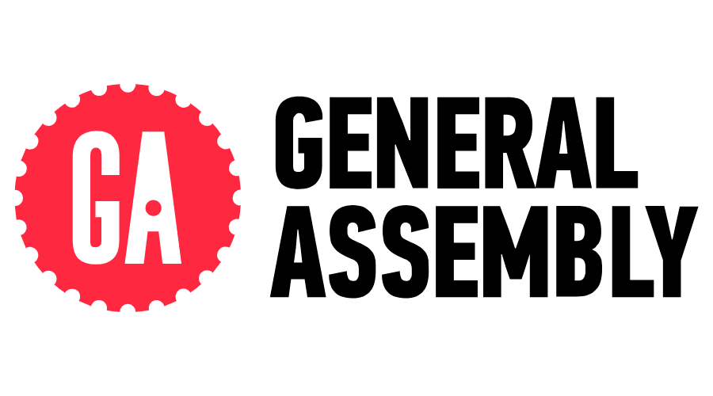
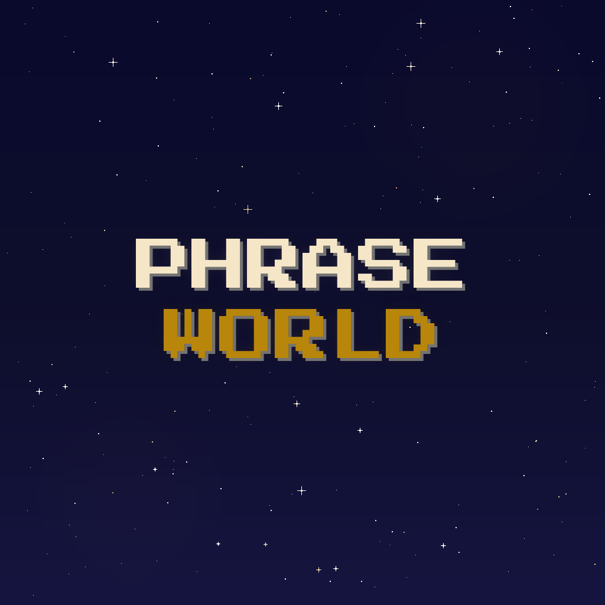
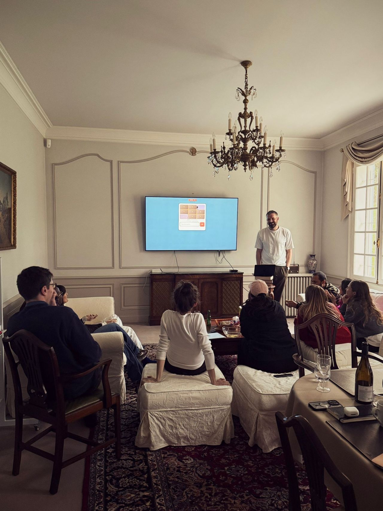
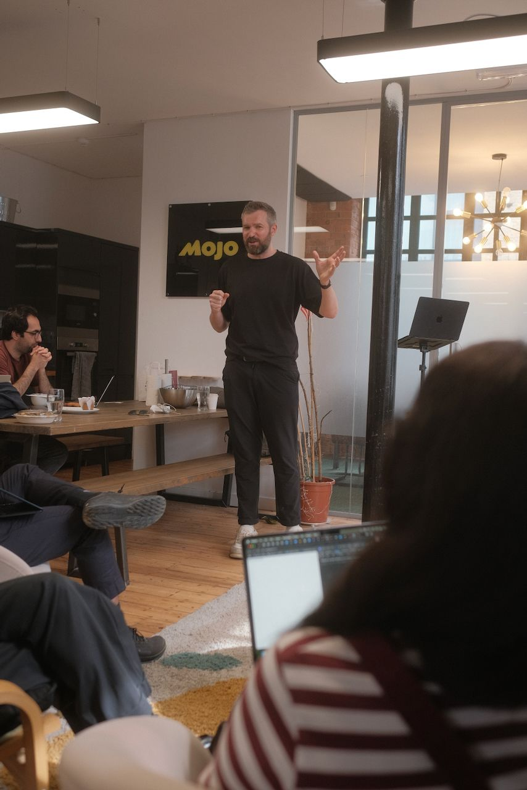
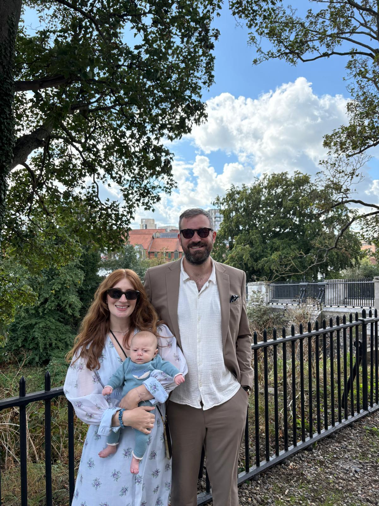

So, do you think we should talk?
(don't worry, I'm not tracking your responses)
Thanks for reading. Talk soon.

Ok, no hard feelings.
Hey Evaro, my name is Paul.
I work for Simplyhealth -
you may be familiar,
we invest in you, after all.
Don't worry.
I haven't actually written you a poem.
I'm a product person who's spent the last seven years working in digital health. Whilst I'm a long way from being a clinician, doing what I do in a sector that can positively impact someone's health is what keeps me in it.
(You don't get the same "feels" from fintech.)
a few places I've worked:

When I joined Simplyhealth, the team was a group of non-PMs sitting inside an IT delivery function. I've coached them into a genuinely product-led team, and I'd confidently hire every one of them again.
Three years in, not one of my reports has handed their notice in. I have, however, had to invite a couple of people to move on. I'm happy to talk about that if we speak.
Being a Head of Product is a different skillset to being a product manager. The work I'm proudest of is the work my team does, not the work I do. I'm good at spotting potential, nurturing it, and being direct when something isn't a fit.
a couple of people I've worked with:Good product leadership is about making thinking more visible.
If your team can't see the logic behind the priorities, they're just executing. If your business can't see how product work ladders to outcomes, they treat product as a delivery function. A lot of my time goes on making those connections explicit.
When it works, the team gets on with it. They understand the why, they're invested in the problem, and the business trusts them to crack on.
I'm reflective and like writing about product thinking from time to time.
A year-in-review essay on the shift from delivery-driven to product-led, and what I've learned trying to do it.
Hustle Badger · guideA practical guide on structuring product launches, from planning through execution.
I've been doing more external talks on AI in product too. (More on that further down.)
The AI revolution is removing the barrier to building things, and it's unlocked a few things for me.
I'm shipping things myself again.
My Catchphrase-meets-Wordle AI fever dream. Launched in January.

an app · liveMy pivoted idea that I hope has a shot at making some decent side income. Live on the App Store.
I'm leading my team to become AI-native PMs.
I'm rolling Claude out across the team. The goal is simple: maximise the time they spend on the work AI can't do. Talking to customers, reading data, making product decisions. Automate the rest.
I've been talking about this publicly.
I've been exploring what AI actually changes about the craft. What it's unlocking creatively, where it's overhyped, and what it means for how we build products. I've done a couple of talks on this recently. (I'm a confident speaker, and I want to do more of it.)


The bigger payoff of all this: building things again has put me back inside the product and engineering process at a much more granular level than my day job allows. My coaching hat now has stronger opinions on it.
A few bits stood out. Responding to them here, quickly.
The Simplyhealth partner services network is a version of this work. Individual partnerships used to sit as separate integrations. We've been consolidating them into a single network layer so new services can plug in through configuration rather than custom journey design. The strategic work here is getting the business comfortable with the short-term cost of rebuilding, in exchange for long-term unit economics that compound.
I also think removing things from the product is one of the most under-used skills in product management. At Thriva I swung the axe on packages that weren't converting, and it drove a meaningful jump in conversion on the core product. Most of the value in a platform consolidation comes from the things you stop doing, not the things you add.
Agreed, and I think this is the hardest culture shift in the spec. You can't do it by rewriting job descriptions. PMs become builders when they have the skill, the data, and the air cover to back their own judgement calls. Skill and data can be taught. Air cover has to be created for them, by holding the line with the rest of the business. My job is the third one more than the first two.
My product background is in growth teams, and I've worked in marketing functions as a product marketer too. The biggest impact comes from both sides working on the same problem, and is how I have set things up to run at Simplyhealth.

[your caption here, Paul]Norwich is a great city and one I'm genuinely happy to spend time in. I'm settled in South London, but I'd be in the office one or two days a week. Enough to build the kind of in-person rhythm that makes a team work, while keeping the deep-focus time that makes me good at the job.
Worth a conversation about how that lands with you.
(don't worry, I'm not tracking your responses)
Thanks for reading. Talk soon.
Ok, no hard feelings.